8 GARCHモデル
8.1 GARCHモデル
8.1.1 GARCH(p,q)モデルのサンプルパス生成
- ボラティリティ方程式 \[ \sigma_t^2=\omega+\alpha_1 u_{t-1}^2+\cdots+\alpha_p u_{t-p}^2+\beta_1 \sigma_{t-1}^2+\cdots+\beta_q \sigma_{t-q}^2\]
- パッケージfGarch
- https://www.rdocumentation.org/packages/fGarch/versions/3042.83.2/topics/garchSim
8.1.1.1 ARCH(p)モデル
- パラメータ設定例
- ボラティリティ方程式 (\(p=2, q=0\)): \(\omega=10^{-6}\) (デフォルト), \(\alpha_1=0.5, \alpha_2=0.1\)
## NOTE: Packages 'fBasics', 'timeDate', and 'timeSeries' are no longer
## attached to the search() path when 'fGarch' is attached.
##
## If needed attach them yourself in your R script by e.g.,
## require("timeSeries")# ARCH(2) - use default omega and specify alpha, set beta=0!
spec <- garchSpec(model = list(alpha = c(0.5, 0.1), beta = 0))
set.seed(Seedv)
x <- garchSim(spec, n = Tlen)
plot(x)


8.1.1.2 GARCH(p,q)モデル
- パラメータ設定例
- ボラティリティ方程式 (次数\(p=2,q=1\)): \(\omega=10^{-6}\)(デフォルト), \(\alpha_1=0.5, \alpha_2=0.1, \beta_1=0.35\)
spec <- garchSpec(model = list(alpha = c(0.5, 0.1), beta = 0.35))
set.seed(Seedv)
x <- garchSim(spec, n = Tlen)
plot(x)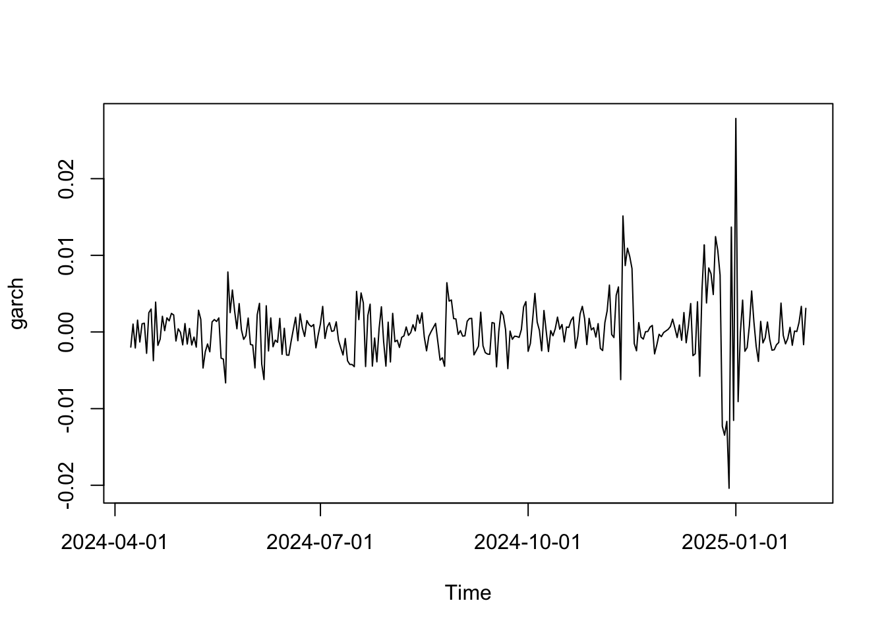

8.1.1.3 ARMA(p’,q’)-GARCH(p,q)モデル
- パラメータ設定例
- 平均方程式 (\(p'=1,q'=2\)): \(\phi_1=0.7,\theta_1=0.3,\theta_2=-0.3\)
- ボラティリティ方程式 (\(p=1,q=1\)): \(\omega=10^{-6}\)(デフォルト), \(\alpha_1=0.5, \alpha_2=0.1, \beta_1=0.35\)
spec <- garchSpec(model = list(ar = 0.7, ma = c(0.3, -0.3),
alpha = c(0.5, 0.1), beta = 0.35))
set.seed(Seedv)
x <- garchSim(spec, n = Tlen)
plot(x)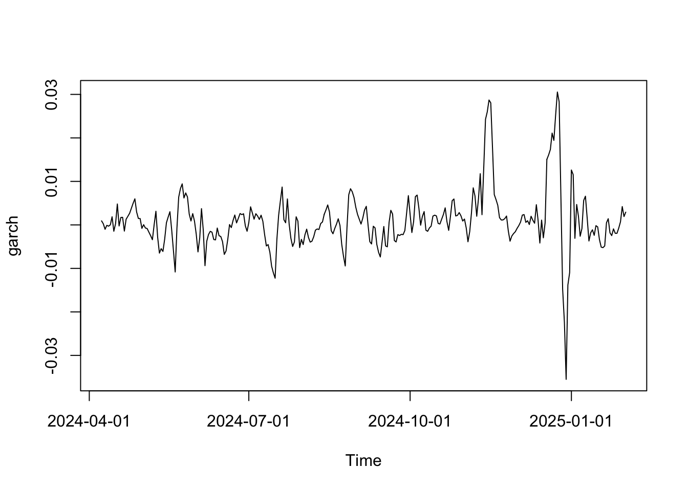


8.2 GARCHモデルの推定
- garchFit関数: 1変量ARMA-GARCHモデルを適合
- 最尤法
- ARMAおよびGARCHのモデル次数を引数に与える (デフォルト, GARCH(1,1))
- 参考:
- 福地・伊藤(2011). Rによる計量経済分析. Sec.8.3
- Tsay, Ch.4
data("dem2gbp") # DEM/GBP日次対数リターン,Jan/31984〜Dec/31/1991 (1974件)
x <- dem2gbp; Tlen = nrow(dem2gbp)
ts.plot(x)


- ARCH効果の検定
- 例. ラグ\(p=5\)を指定した場合
## Loading required package: zoo##
## Attaching package: 'zoo'## The following objects are masked from 'package:base':
##
## as.Date, as.Date.numeric##
## ARCH LM-test; Null hypothesis: no ARCH effects
##
## data: unlist(x)
## Chi-squared = 182.43, df = 5, p-value < 2.2e-16→ 帰無仮説 (\(\alpha_1= \ldots=\alpha_{5}=0\)) を棄却
- 例. ARCH(5)モデルの適合
fit.ARCH <- garchFit(formula = ~ garch(5, 0), data = x,
trace = FALSE, include.mean = TRUE)
summary(fit.ARCH)##
## Title:
## GARCH Modelling
##
## Call:
## garchFit(formula = ~garch(5, 0), data = x, include.mean = TRUE,
## trace = FALSE)
##
## Mean and Variance Equation:
## data ~ garch(5, 0)
## <environment: 0x117c7d840>
## [data = x]
##
## Conditional Distribution:
## norm
##
## Coefficient(s):
## mu omega alpha1 alpha2 alpha3 alpha4
## -0.00056115 0.07923997 0.24684994 0.14580250 0.08569016 0.08462344
## alpha5
## 0.12554184
##
## Std. Errors:
## based on Hessian
##
## Error Analysis:
## Estimate Std. Error t value Pr(>|t|)
## mu -0.0005612 0.0087236 -0.064 0.94871
## omega 0.0792400 0.0065155 12.162 < 2e-16 ***
## alpha1 0.2468499 0.0344795 7.159 8.11e-13 ***
## alpha2 0.1458025 0.0332822 4.381 1.18e-05 ***
## alpha3 0.0856902 0.0261306 3.279 0.00104 **
## alpha4 0.0846234 0.0280618 3.016 0.00256 **
## alpha5 0.1255418 0.0286409 4.383 1.17e-05 ***
## ---
## Signif. codes: 0 '***' 0.001 '**' 0.01 '*' 0.05 '.' 0.1 ' ' 1
##
## Log Likelihood:
## -1118.366 normalized: -0.5665483
##
## Description:
## Tue Mar 19 13:23:42 2024 by user:
##
##
## Standardised Residuals Tests:
## Statistic p-Value
## Jarque-Bera Test R Chi^2 817.1006 0
## Shapiro-Wilk Test R W 0.9662239 0
## Ljung-Box Test R Q(10) 10.09528 0.432174
## Ljung-Box Test R Q(15) 17.39533 0.2957857
## Ljung-Box Test R Q(20) 19.36413 0.498283
## Ljung-Box Test R^2 Q(10) 11.95177 0.2882973
## Ljung-Box Test R^2 Q(15) 20.96312 0.1380119
## Ljung-Box Test R^2 Q(20) 23.97484 0.2434931
## LM Arch Test R TR^2 11.548 0.4826274
##
## Information Criterion Statistics:
## AIC BIC SIC HQIC
## 1.140189 1.160004 1.140164 1.147469resd = residuals(fit.ARCH, standardize = T)
par(mfcol = c(3, 1))
ts.plot(resd)
acf(resd); pacf(resd ^ 2)
- 例. GARCH(1,1)モデルの適合
fit.GARCH <- garchFit(formula = ~ garch(1, 1), data = x,
trace = FALSE, include.mean = TRUE)
summary(fit.GARCH)##
## Title:
## GARCH Modelling
##
## Call:
## garchFit(formula = ~garch(1, 1), data = x, include.mean = TRUE,
## trace = FALSE)
##
## Mean and Variance Equation:
## data ~ garch(1, 1)
## <environment: 0x120523ac0>
## [data = x]
##
## Conditional Distribution:
## norm
##
## Coefficient(s):
## mu omega alpha1 beta1
## -0.0061903 0.0107614 0.1531341 0.8059737
##
## Std. Errors:
## based on Hessian
##
## Error Analysis:
## Estimate Std. Error t value Pr(>|t|)
## mu -0.006190 0.008462 -0.732 0.464447
## omega 0.010761 0.002838 3.793 0.000149 ***
## alpha1 0.153134 0.026422 5.796 6.8e-09 ***
## beta1 0.805974 0.033381 24.144 < 2e-16 ***
## ---
## Signif. codes: 0 '***' 0.001 '**' 0.01 '*' 0.05 '.' 0.1 ' ' 1
##
## Log Likelihood:
## -1106.608 normalized: -0.5605916
##
## Description:
## Tue Mar 19 13:23:43 2024 by user:
##
##
## Standardised Residuals Tests:
## Statistic p-Value
## Jarque-Bera Test R Chi^2 1059.851 0
## Shapiro-Wilk Test R W 0.9622848 0
## Ljung-Box Test R Q(10) 10.12141 0.4299066
## Ljung-Box Test R Q(15) 17.04349 0.3162711
## Ljung-Box Test R Q(20) 19.29764 0.5025619
## Ljung-Box Test R^2 Q(10) 9.062555 0.5261773
## Ljung-Box Test R^2 Q(15) 16.07769 0.3769072
## Ljung-Box Test R^2 Q(20) 17.50715 0.6198388
## LM Arch Test R TR^2 9.771217 0.6360238
##
## Information Criterion Statistics:
## AIC BIC SIC HQIC
## 1.125236 1.136559 1.125228 1.129396## mu omega alpha1 beta1
## -0.006190317 0.010761385 0.153134063 0.805973739## [1] 1.39586970 -0.78568121 -0.11839598 0.34278825 -1.35175439 -1.06335161
## [7] -0.06248781 -0.30590821 -0.65122451 1.57675563
- → 残差の系列相関は概ね消滅, 非正規性残る→ 改善余地有り
- Tsay, Ch.4を参照のこと
- ボラティリティ推定値 (内挿予測)
## [1] 0.3659949 0.3983608 0.3919991 0.3673416 0.3492097 0.3783785 0.3885138
## [8] 0.3640161 0.3456269 0.3388205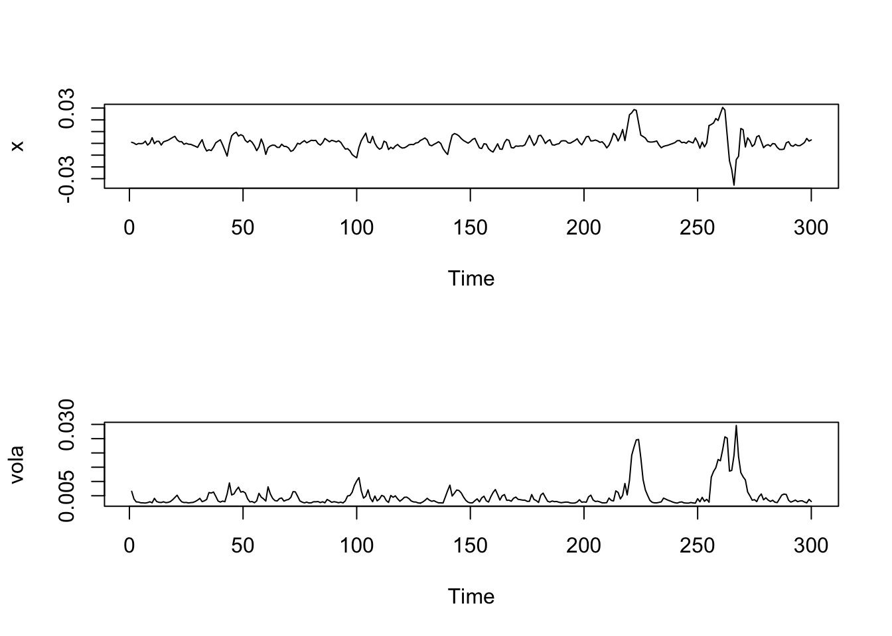
- \(l\)期先予測 (外挿予測)
# n.ahead(=20)期先予測
# nx:表示する観測データ数
par(mfrow = c(1,1))
# 収益率系列xの予測 (& 95%信頼区間)
x.pred <- predict(fit.GARCH, n.ahead = 20, plot = TRUE, conf = .95, nx = 300) 
## [1] 0.3833961 0.3895421 0.3953471 0.4008358 0.4060303 0.4109507 0.4156151
## [8] 0.4200402 0.4242410 0.4282312 0.4320237 0.4356301 0.4390612 0.4423269
## [15] 0.4454366 0.4483989 0.4512218 0.4539128 0.4564788 0.4589264# プロット (実績値&予測値)
v.pred <- c(vola[(Tlen - 99):Tlen], v.pred) #; length(v.pred)
plot(v.pred, type = "l", ylab = "vola")
abline(v = 101, col = "red", lty = "dotted")
- GARCH(1,1)モデルの\(l\)-期先ボラティリティ予測値
- \(T\): データ期間 (モデル推定に使用) の最終時点 (予測の起点)
- \(u_T, \sigma_T^2\): モデル適合による時点\(T\)における推定値 (所与)
- \(l=1\)のケース: \[\sigma_T^2 (1) = \omega + \alpha_1 u_T^2 + \beta_1 \sigma_T^2\]
- \(l\ge2\)のケース: \[\sigma_T^2 (l) = \omega \frac{1-(\alpha_1 + \beta_1)^{l-1}}{1-(\alpha_1 + \beta_1)} + (\alpha_1 + \beta_1)^{l-1} \sigma_T^2 (1)\]
- 参考: Tsay, pp.200-201
- 代替パッケージ: rugarch
## Loading required package: parallel##
## Attaching package: 'rugarch'## The following object is masked from 'package:stats':
##
## sigmaspec <- ugarchspec(variance.model = list(garchOrder = c(1, 1))) # モデルの特定
fit.GARCH <- ugarchfit(data = x, spec = spec) # モデルの適合
(x.pred <- ugarchforecast(fitORspec = fit.GARCH, n.ahead = 20)) # 収益率系列, ボラティリティの予測 (→ x.predに2系列を格納)##
## *------------------------------------*
## * GARCH Model Forecast *
## *------------------------------------*
## Model: sGARCH
## Horizon: 20
## Roll Steps: 0
## Out of Sample: 0
##
## 0-roll forecast [T0=1975-05-29 09:00:00]:
## Series Sigma
## T+1 0.0272008 0.3850
## T+2 -0.0197455 0.3915
## T+3 -0.0005006 0.3976
## T+4 -0.0083897 0.4034
## T+5 -0.0051557 0.4088
## T+6 -0.0064815 0.4139
## T+7 -0.0059380 0.4187
## T+8 -0.0061608 0.4233
## T+9 -0.0060694 0.4276
## T+10 -0.0061069 0.4317
## T+11 -0.0060915 0.4356
## T+12 -0.0060978 0.4393
## T+13 -0.0060952 0.4427
## T+14 -0.0060963 0.4460
## T+15 -0.0060959 0.4492
## T+16 -0.0060960 0.4522
## T+17 -0.0060960 0.4550
## T+18 -0.0060960 0.4577
## T+19 -0.0060960 0.4603
## T+20 -0.0060960 0.4627# 別々に表示
#fitted(x.pred) # 収益率系列の予測値
#x.pred@forecast$seriesFor # 同
sigma(x.pred) # ボラティリティ(条件付標準偏差)の予測値## 1975-05-29 09:00:00
## T+1 0.3850257
## T+2 0.3915075
## T+3 0.3976065
## T+4 0.4033520
## T+5 0.4087702
## T+6 0.4138848
## T+7 0.4187168
## T+8 0.4232855
## T+9 0.4276084
## T+10 0.4317014
## T+11 0.4355791
## T+12 0.4392549
## T+13 0.4427411
## T+14 0.4460491
## T+15 0.4491894
## T+16 0.4521716
## T+17 0.4550049
## T+18 0.4576977
## T+19 0.4602578
## T+20 0.46269248.3 GARCHモデルのバリエーション
- パッケージrugarch
- ugarchspec(): 一変量GARCHモデルの特定 (specification)
- modelの選択肢: “sGARCH”, “fGARCH”, “eGARCH”, “gjrGARCH”, “apARCH”, “iGARCH”, “csGARCH”
- submodelの選択肢(model=“fGARCH”の場合): “GARCH”, “TGARCH”, “AVGARCH”, “NGARCH”, “NAGARCH”, “APARCH”, “GJRGARCH”, “ALL- GARCH”.
- distribution.mpdel(イノベーションに用いる条件付確率密度)の選択肢: "norm", "snorm"(skew-normal), "std"(student t), "sstd"(skew-student), "ged"(generalized error), "sged"(skew-ged), "nig"(normal inverse gaussian), "ghyp"(Generalized Hyperbolic), "jsu"(Johnson's SU).
- ugarchfit(): 一変量GARCHモデルの適合
- solverの選択肢: “nlminb”, “solnp”, “lbfgs”, “gosolnp”, “nloptr” or “hybrid”
- 注): 本パッケージでは, "NAGARCH (Nonlinear Asymmetric GARCH)", "NGARCH (Nonlinear GARCH)"である. Tsay, 4.12で紹介されているEngle and Ng (1993)の"NGARCH (Nonsymmetric GARCH)"は, 前者に対応する. https://www.rdocumentation.org/packages/rugarch/versions/1.4-4
データセット: spyreal
- SPDR Standard and Poors 500 Open-Close Daily Return and Realized Kernel Volatility
- SPDR(スパイダー) S\&P500インデックス: 始値-終値(open-close)リターン, 実現カーネル(realized kernel)ボラティリティ.
- 期間: 2002-01-02 〜 2008-08-29
- Reference: Hansen, P. R., Huang, Z., and Shek, H. H. (2012). Realized GARCH: a joint model for returns and realized measures of volatility. Journal of Applied Econometrics, 27(6), 877–906.## Loading required package: parallel##
## Attaching package: 'rugarch'## The following object is masked from 'package:stats':
##
## sigma## SPY_OC SPY_RK
## 2002-01-02 0.0051151007 0.010044750
## 2002-01-03 0.0101514981 0.005342828
## 2002-01-04 0.0009369278 0.007978535
## 2002-01-07 -0.0097245499 0.005772834
## 2002-01-08 -0.0033463500 0.006452759
## 2002-01-09 -0.0078317023 0.0076848248.3.1 IARCH(1,1)
spec1 <- ugarchspec(
variance.model = list(model = "iGARCH", garchOrder = c(1, 1)),
mean.model = list(armaOrder = c(0, 0), include.mean = TRUE),
distribution.model = "norm", fixed.pars = list(omega = 0))
# 平均方程式にARMA(1,1)の場合: mean.model=list(armaOrder = c(1, 1)
mod_igarch <- ugarchfit(spec = spec1, data = spyreal[, 1], solver = 'hybrid')
mod_igarch##
## *---------------------------------*
## * GARCH Model Fit *
## *---------------------------------*
##
## Conditional Variance Dynamics
## -----------------------------------
## GARCH Model : iGARCH(1,1)
## Mean Model : ARFIMA(0,0,0)
## Distribution : norm
##
## Optimal Parameters
## ------------------------------------
## Estimate Std. Error t value Pr(>|t|)
## mu -0.000028 0.000177 -0.15908 0.8736
## omega 0.000000 NA NA NA
## alpha1 0.043186 0.006677 6.46763 0.0000
## beta1 0.956814 NA NA NA
##
## Robust Standard Errors:
## Estimate Std. Error t value Pr(>|t|)
## mu -0.000028 0.000212 -0.13345 0.893837
## omega 0.000000 NA NA NA
## alpha1 0.043186 0.010297 4.19426 0.000027
## beta1 0.956814 NA NA NA
##
## LogLikelihood : 5630.331
##
## Information Criteria
## ------------------------------------
##
## Akaike -6.7730
## Bayes -6.7664
## Shibata -6.7730
## Hannan-Quinn -6.7705
##
## Weighted Ljung-Box Test on Standardized Residuals
## ------------------------------------
## statistic p-value
## Lag[1] 5.479 0.019252
## Lag[2*(p+q)+(p+q)-1][2] 8.207 0.005702
## Lag[4*(p+q)+(p+q)-1][5] 10.148 0.008436
## d.o.f=0
## H0 : No serial correlation
##
## Weighted Ljung-Box Test on Standardized Squared Residuals
## ------------------------------------
## statistic p-value
## Lag[1] 0.07752 0.7807
## Lag[2*(p+q)+(p+q)-1][5] 0.87181 0.8880
## Lag[4*(p+q)+(p+q)-1][9] 1.85043 0.9221
## d.o.f=2
##
## Weighted ARCH LM Tests
## ------------------------------------
## Statistic Shape Scale P-Value
## ARCH Lag[3] 0.9841 0.500 2.000 0.3212
## ARCH Lag[5] 1.3879 1.440 1.667 0.6223
## ARCH Lag[7] 2.0139 2.315 1.543 0.7144
##
## Nyblom stability test
## ------------------------------------
## Joint Statistic: 0.1404
## Individual Statistics:
## mu 0.02297
## alpha1 0.08852
##
## Asymptotic Critical Values (10% 5% 1%)
## Joint Statistic: 0.61 0.749 1.07
## Individual Statistic: 0.35 0.47 0.75
##
## Sign Bias Test
## ------------------------------------
## t-value prob sig
## Sign Bias 1.24939 0.2117
## Negative Sign Bias 0.07504 0.9402
## Positive Sign Bias 0.78468 0.4328
## Joint Effect 5.84998 0.1191
##
##
## Adjusted Pearson Goodness-of-Fit Test:
## ------------------------------------
## group statistic p-value(g-1)
## 1 20 40.09 0.0031807
## 2 30 58.61 0.0009158
## 3 40 63.78 0.0073916
## 4 50 83.13 0.0016808
##
##
## Elapsed time : 0.019144068.3.2 GJR-GARCH(1,1)
spec2 <- ugarchspec(
variance.model = list(model = "gjrGARCH", garchOrder = c(1, 1)),
mean.model = list(armaOrder = c(0, 0), include.mean = TRUE),
distribution.model = "norm")
mod_gjr <- ugarchfit(spec = spec2, data = spyreal[, 1], solver = 'hybrid')
mod_gjr##
## *---------------------------------*
## * GARCH Model Fit *
## *---------------------------------*
##
## Conditional Variance Dynamics
## -----------------------------------
## GARCH Model : gjrGARCH(1,1)
## Mean Model : ARFIMA(0,0,0)
## Distribution : norm
##
## Optimal Parameters
## ------------------------------------
## Estimate Std. Error t value Pr(>|t|)
## mu -0.000235 0.000166 -1.410892 0.15828
## omega 0.000001 0.000001 1.071102 0.28412
## alpha1 0.000000 0.001536 0.000029 0.99998
## beta1 0.946145 0.009443 100.195459 0.00000
## gamma1 0.090962 0.015265 5.958717 0.00000
##
## Robust Standard Errors:
## Estimate Std. Error t value Pr(>|t|)
## mu -0.000235 0.000398 -0.590324 0.554973
## omega 0.000001 0.000003 0.176169 0.860161
## alpha1 0.000000 0.067909 0.000001 0.999999
## beta1 0.946145 0.079992 11.827974 0.000000
## gamma1 0.090962 0.024658 3.688997 0.000225
##
## LogLikelihood : 5665.74
##
## Information Criteria
## ------------------------------------
##
## Akaike -6.8120
## Bayes -6.7957
## Shibata -6.8120
## Hannan-Quinn -6.8059
##
## Weighted Ljung-Box Test on Standardized Residuals
## ------------------------------------
## statistic p-value
## Lag[1] 5.697 0.016993
## Lag[2*(p+q)+(p+q)-1][2] 7.483 0.008869
## Lag[4*(p+q)+(p+q)-1][5] 8.806 0.018531
## d.o.f=0
## H0 : No serial correlation
##
## Weighted Ljung-Box Test on Standardized Squared Residuals
## ------------------------------------
## statistic p-value
## Lag[1] 3.883 0.04878
## Lag[2*(p+q)+(p+q)-1][5] 5.237 0.13523
## Lag[4*(p+q)+(p+q)-1][9] 6.736 0.22230
## d.o.f=2
##
## Weighted ARCH LM Tests
## ------------------------------------
## Statistic Shape Scale P-Value
## ARCH Lag[3] 0.1657 0.500 2.000 0.6840
## ARCH Lag[5] 0.4472 1.440 1.667 0.8991
## ARCH Lag[7] 1.9375 2.315 1.543 0.7306
##
## Nyblom stability test
## ------------------------------------
## Joint Statistic: 292.4172
## Individual Statistics:
## mu 0.04326
## omega 55.96148
## alpha1 0.22053
## beta1 0.17934
## gamma1 0.19934
##
## Asymptotic Critical Values (10% 5% 1%)
## Joint Statistic: 1.28 1.47 1.88
## Individual Statistic: 0.35 0.47 0.75
##
## Sign Bias Test
## ------------------------------------
## t-value prob sig
## Sign Bias 0.9606 0.3369
## Negative Sign Bias 0.8427 0.3995
## Positive Sign Bias 0.6544 0.5129
## Joint Effect 2.4783 0.4792
##
##
## Adjusted Pearson Goodness-of-Fit Test:
## ------------------------------------
## group statistic p-value(g-1)
## 1 20 37.13 0.007635
## 2 30 53.67 0.003532
## 3 40 68.35 0.002521
## 4 50 83.07 0.001704
##
##
## Elapsed time : 0.11317098.3.3 APARCH
spec3 <- ugarchspec(
variance.model = list(model = "apARCH", garchOrder = c(1, 1)),
mean.model = list(armaOrder = c(0, 0), include.mean = TRUE),
distribution.model = "std")
# 一般誤差分布使用の場合: distribution.model="ged")
mod_aparch <- ugarchfit(spec = spec3, data = spyreal[, 1], solver = 'hybrid')
mod_aparch##
## *---------------------------------*
## * GARCH Model Fit *
## *---------------------------------*
##
## Conditional Variance Dynamics
## -----------------------------------
## GARCH Model : apARCH(1,1)
## Mean Model : ARFIMA(0,0,0)
## Distribution : std
##
## Optimal Parameters
## ------------------------------------
## Estimate Std. Error t value Pr(>|t|)
## mu -0.000125 0.000172 -0.72685 0.467320
## omega 0.000027 0.000032 0.84129 0.400187
## alpha1 0.041590 0.012433 3.34503 0.000823
## beta1 0.951150 0.008932 106.49292 0.000000
## gamma1 1.000000 0.000767 1303.38424 0.000000
## delta 1.226669 0.100403 12.21741 0.000000
## shape 15.225663 4.931263 3.08758 0.002018
##
## Robust Standard Errors:
## Estimate Std. Error t value Pr(>|t|)
## mu -0.000125 NaN NaN NaN
## omega 0.000027 NaN NaN NaN
## alpha1 0.041590 NaN NaN NaN
## beta1 0.951150 NaN NaN NaN
## gamma1 1.000000 NaN NaN NaN
## delta 1.226669 NaN NaN NaN
## shape 15.225663 NaN NaN NaN
##
## LogLikelihood : 5675.851
##
## Information Criteria
## ------------------------------------
##
## Akaike -6.8217
## Bayes -6.7989
## Shibata -6.8218
## Hannan-Quinn -6.8133
##
## Weighted Ljung-Box Test on Standardized Residuals
## ------------------------------------
## statistic p-value
## Lag[1] 5.897 0.015171
## Lag[2*(p+q)+(p+q)-1][2] 7.942 0.006704
## Lag[4*(p+q)+(p+q)-1][5] 9.441 0.012796
## d.o.f=0
## H0 : No serial correlation
##
## Weighted Ljung-Box Test on Standardized Squared Residuals
## ------------------------------------
## statistic p-value
## Lag[1] 4.402 0.0359
## Lag[2*(p+q)+(p+q)-1][5] 5.693 0.1061
## Lag[4*(p+q)+(p+q)-1][9] 7.269 0.1777
## d.o.f=2
##
## Weighted ARCH LM Tests
## ------------------------------------
## Statistic Shape Scale P-Value
## ARCH Lag[3] 0.03822 0.500 2.000 0.8450
## ARCH Lag[5] 0.17688 1.440 1.667 0.9709
## ARCH Lag[7] 1.85908 2.315 1.543 0.7471
##
## Nyblom stability test
## ------------------------------------
## Joint Statistic: NaN
## Individual Statistics:
## mu 0.06082
## omega 0.10137
## alpha1 0.19391
## beta1 0.19336
## gamma1 NaN
## delta 0.12311
## shape 0.58877
##
## Asymptotic Critical Values (10% 5% 1%)
## Joint Statistic: 1.69 1.9 2.35
## Individual Statistic: 0.35 0.47 0.75
##
## Sign Bias Test
## ------------------------------------
## t-value prob sig
## Sign Bias 0.9891 0.3227
## Negative Sign Bias 1.4526 0.1465
## Positive Sign Bias 0.8096 0.4183
## Joint Effect 3.4471 0.3277
##
##
## Adjusted Pearson Goodness-of-Fit Test:
## ------------------------------------
## group statistic p-value(g-1)
## 1 20 29.34 0.060884
## 2 30 41.07 0.067923
## 3 40 46.78 0.183213
## 4 50 81.80 0.002274
##
##
## Elapsed time : 0.9073079- 係数の推定値
## mu omega alpha1 beta1 gamma1
## -1.252560e-04 2.654268e-05 4.159036e-02 9.511501e-01 1.000000e+00
## delta shape
## 1.226669e+00 1.522566e+01##
## Akaike -6.821722
## Bayes -6.798912
## Shibata -6.821757
## Hannan-Quinn -6.813268- 推定されたボラティリティ系列
- プロット
library(ggplot2)
library(xts) #library(zoo)
autoplot(dat) # 時系列プロット
# ボラティリティ推定値同士の比較
plot(as.vector(sqrt(dat$SPY_RK)), as.vector(dat$GARCH))
#plot(as.vector(dat$SPY_RK), as.vector(dat$GARCH)) - Bootstrap法に基づく予測
- GARCHモデルによるn期先予測には2種類の不確実性: 予測確率分布に起因するもの & パラメータ推定誤差に起因するもの.
- Bootstrap法: 適合GARCHモデルの経験分布よりイノベーションをリサンプルすることで, 将来の時系列(series)と標準偏差(sigma)を生成.
- “full”法(Pascual et al (2006)): パラメータのシミュレーション分布を発生させることで, パラメータ不確実性を考慮(実行時間がかかる).
- “partial”法: 分布の不確実性のみ考慮
dat.pred <- ugarchboot(mod_aparch, n.ahead = 30, method = "Partial")
#plot(dat.pred, which = "all")
# 時系列(リターン)
plot(dat.pred, which = 2)

##
## *-----------------------------------*
## * GARCH Bootstrap Forecast *
## *-----------------------------------*
## Model : apARCH
## n.ahead : 30
## Bootstrap method: partial
## Date (T[0]): 2008-08-29
##
## Series (summary):
## min q.25 mean q.75 max forecast[analytic]
## t+1 -0.038803 -0.007435 -0.000832 0.005447 0.033169 -0.000125
## t+2 -0.038382 -0.007708 -0.000686 0.006119 0.029359 -0.000125
## t+3 -0.032202 -0.005537 0.000292 0.006260 0.024769 -0.000125
## t+4 -0.053668 -0.005972 -0.000486 0.005654 0.029930 -0.000125
## t+5 -0.054807 -0.006105 -0.000234 0.006056 0.040059 -0.000125
## t+6 -0.047361 -0.007001 -0.000755 0.005527 0.035188 -0.000125
## t+7 -0.037725 -0.006071 0.000198 0.006128 0.028826 -0.000125
## t+8 -0.073513 -0.006736 -0.000595 0.005979 0.024958 -0.000125
## t+9 -0.042608 -0.005949 -0.000321 0.006382 0.038580 -0.000125
## t+10 -0.038198 -0.005487 0.000401 0.006646 0.035592 -0.000125
## .....................
##
## Sigma (summary):
## min q0.25 mean q0.75 max forecast[analytic]
## t+1 0.010004 0.010004 0.010004 0.010004 0.010004 0.010004
## t+2 0.009665 0.009665 0.010018 0.010206 0.013695 0.009985
## t+3 0.009341 0.009341 0.010036 0.010383 0.014279 0.009967
## t+4 0.009030 0.009184 0.009983 0.010424 0.016638 0.009948
## t+5 0.008733 0.009056 0.009973 0.010505 0.016028 0.009930
## t+6 0.008447 0.008974 0.009964 0.010628 0.020381 0.009912
## t+7 0.008174 0.009015 0.009989 0.010717 0.019688 0.009894
## t+8 0.007911 0.008887 0.009945 0.010610 0.018981 0.009877
## t+9 0.007660 0.008828 0.009951 0.010692 0.025926 0.009859
## t+10 0.007420 0.008720 0.009938 0.010567 0.024939 0.009842
## .....................8.4 GARCHモデル: データ分析例 (Tsay, Ch4)
8.4.1 必要な関数やデータセットの入手
- 教科書ホームページからのRコードへの直接の読み込みの方法
# 教科書著者(Tsay)の関数
fctns <- c("igarch.r", "garchm.r", "egarch.r", "ngarch.r", "tgarch11.r", "vold2m.r")
url_home <- "https://faculty.chicagobooth.edu/-/media/faculty/ruey-s-tsay/teaching/introts/"
for (fct in fctns) {
url_tmp <- file.path(url_home, fct)
source(url_tmp)
}# データセット
# 単一テキストファイルの入手
#library(rio)
#url_tmp <- "https://faculty.chicagobooth.edu/-/media/faculty/ruey-s-tsay/teaching/introts/d-spy-0111.txt"
#rio::import(url_tmp)
# 複数データセットの入った圧縮フォルダ(*.zip)からのデータセット入手
url_tmp <- "https://faculty.chicagobooth.edu/-/media/faculty/ruey-s-tsay/teaching/introts/ch4data.zip"
tmp <- tempfile()
tmp2 <- tempfile()
download.file(url_tmp, tmp)
unzip(tmp, exdir = tmp2)
dir(tmp2, recursive = T)
## [1] "d-pg-0111.txt" "d-sp58010.txt" "d-spy-0111.txt" "d-useu9910.txt"
## [5] "m-ibmsp6709.txt" "m-intcsp7309.txt" "m-ko-6111.txt" "m-sp56710.txt"
setwd(tmp2)
unlink(tmp)8.4.2 Integrated GARCH モデル
- Tsay 4.7, pp.211–212
Igarch(): Estimation of a Gaussian IGARCH(1,1) model.
- Igarch(rtn, include.mean = F, volcnt = F)
- rtn: return series
- include.mean: flag for the constant in the mean equation.
- volcnt: flag for the constant term of the volatility equation.# source("Igarch.R")
#
da <- read.table("m-intcsp7309.txt", header = T)
head(da) # monthly returns of Intel & S&P, Jan73--Dec09
## date intc sp
## 1 19730131 0.010050 -0.017111
## 2 19730228 -0.139303 -0.037490
## 3 19730330 0.069364 -0.001433
## 4 19730430 0.086486 -0.040800
## 5 19730531 -0.104478 -0.018884
## 6 19730629 0.133333 -0.006575
intc <- log(da$intc + 1) # monthly log-returns of Intel#mm <- Igarch(intc, include.mean = T, volcnt = T) # --> エラー
#mm <- Igarch(intc, include.mean = T) # --> mu, beta
#mm <- Igarch(intc, volcnt = T) # --> omega, beta
mm <- Igarch(intc) # --> beta
## Estimates: 0.9217433
## Maximized log-likehood: -301.412
##
## Coefficient(s):
## Estimate Std. Error t value Pr(>|t|)
## beta 0.9217433 0.0155534 59.2633 < 2.22e-16 ***
## ---
## Signif. codes: 0 '***' 0.001 '**' 0.01 '*' 0.05 '.' 0.1 ' ' 1
names(mm)
## [1] "par" "volatility"
mm$par # --> beta
## beta
## 0.9217433
head(mm$volatility)
## [1] 0.1275742 0.1225127 0.1248833 0.1213562 0.1187993 0.1181597- –> 教科書の記載と出力が相違(??)

8.4.3 GARCH-M モデル
- Tsay 4.8, pp.213–214
garchM(): Estimation of a Gaussian GARCH(1, 1)-M model.
- The program uses GARCH(1, 1) results as initial values.
- garchM(rtn, type = 1)
- rtn: return series
- type = 1 for Variance-in-mean
- = 2 for volatility-in-mean
- = 3 for log(variance)-in-mean# source("garchM.R") # Compile the script
y <- intc * 100 # Intel stock returns in percentages
garchM(y)
## Maximized log-likehood: -1731.983
##
## Coefficient(s):
## Estimate Std. Error t value Pr(>|t|)
## mu 0.07760995 1.33185168 0.05827 0.9535318
## gamma 0.00794320 0.00925126 0.85861 0.3905577
## omega 9.45891460 3.94127823 2.39996 0.0163968 *
## alpha 0.08761597 0.02673487 3.27722 0.0010484 **
## beta 0.84933817 0.03949061 21.50734 < 2.22e-16 ***
## ---
## Signif. codes: 0 '***' 0.001 '**' 0.01 '*' 0.05 '.' 0.1 ' ' 1- –> 教科書の記載と出力が相違(??)
- リスクプレミアム(gamma), 有意でない
- –> 通常のGARCH(1,1)へ
- #> library(fGarch)
- #> fGarch::garchFit(~ garch(1, 1), data = y, trace = F)
#sp5 <- scan(file = "sp500.txt") # <-- データ無. 誤植?
da <- read.table("m-intcsp7309.txt", header = T)
# <-- 代わりに使用. --> 教科書と結果が異なる
#head(da) # monthly returns of Intel & S&P, Jan73--Dec09
#da <- read.table("m-ibmsp-2611.txt", header = T)
#da <- da[da$data< = 20091231, ]
#head(da) # monthly returns of IBM & S&P, Jan26--Sep11
sp5 <- log(da$sp + 1) # monthly log-returns of S&P
#
library(fGarch)
sp5 <- sp5 * 100
m2 <- fGarch::garchFit(~ 1 + garch(1, 1), data = sp5, trace = F)
summary(m2)
##
## Title:
## GARCH Modelling
##
## Call:
## fGarch::garchFit(formula = ~1 + garch(1, 1), data = sp5, trace = F)
##
## Mean and Variance Equation:
## data ~ 1 + garch(1, 1)
## <environment: 0x10b2af110>
## [data = sp5]
##
## Conditional Distribution:
## norm
##
## Coefficient(s):
## mu omega alpha1 beta1
## 0.56091 0.72752 0.11733 0.85910
##
## Std. Errors:
## based on Hessian
##
## Error Analysis:
## Estimate Std. Error t value Pr(>|t|)
## mu 0.56091 0.18951 2.960 0.003078 **
## omega 0.72752 0.45322 1.605 0.108447
## alpha1 0.11733 0.03157 3.717 0.000202 ***
## beta1 0.85910 0.03023 28.415 < 2e-16 ***
## ---
## Signif. codes: 0 '***' 0.001 '**' 0.01 '*' 0.05 '.' 0.1 ' ' 1
##
## Log Likelihood:
## -1289.671 normalized: -2.904663
##
## Description:
## Tue Mar 19 13:23:56 2024 by user:
##
##
## Standardised Residuals Tests:
## Statistic p-Value
## Jarque-Bera Test R Chi^2 175.7289 0
## Shapiro-Wilk Test R W 0.9655541 1.058946e-08
## Ljung-Box Test R Q(10) 10.2148 0.4218546
## Ljung-Box Test R Q(15) 12.76468 0.6204685
## Ljung-Box Test R Q(20) 15.32494 0.7575226
## Ljung-Box Test R^2 Q(10) 5.082012 0.8856326
## Ljung-Box Test R^2 Q(15) 6.778888 0.9634974
## Ljung-Box Test R^2 Q(20) 7.665347 0.9938604
## LM Arch Test R TR^2 5.295219 0.9473846
##
## Information Criterion Statistics:
## AIC BIC SIC HQIC
## 5.827345 5.864244 5.827184 5.841896| Estimate | Std. Error | t value | Pr(>|t|) | |
|---|---|---|---|---|
| mu | 0.5609132 | 0.1895067 | 2.959859 | 0.0030778 |
| omega | 0.7275158 | 0.4532207 | 1.605213 | 0.1084469 |
| alpha1 | 0.1173334 | 0.0315668 | 3.716989 | 0.0002016 |
| beta1 | 0.8590999 | 0.0302342 | 28.414854 | 0.0000000 |
- –> GARCH(1,1), \(\alpha_1,\beta_1\)とも (5%) 有意.
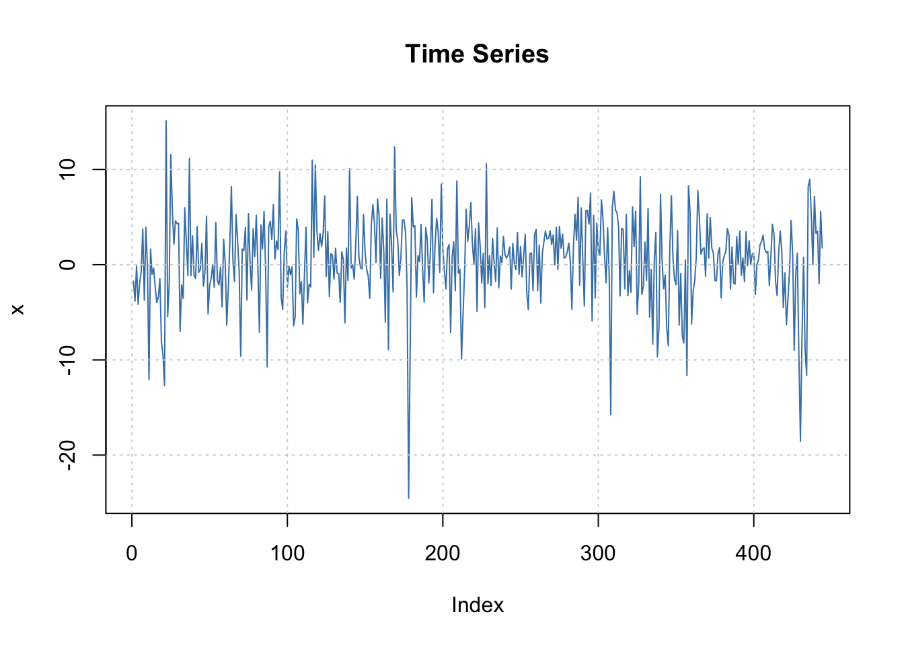
 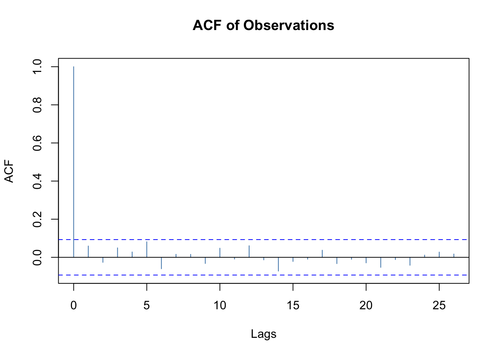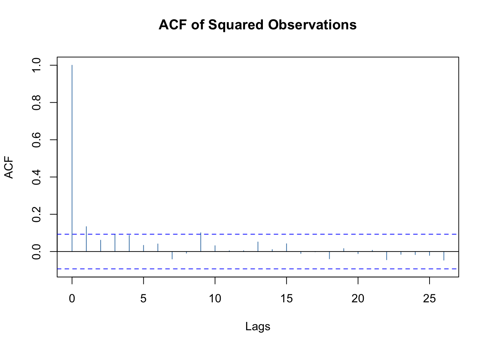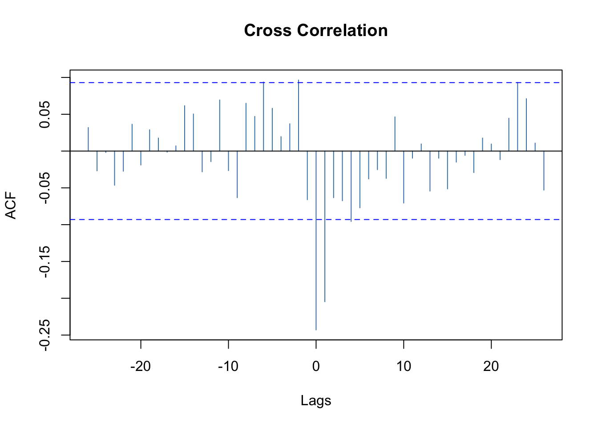
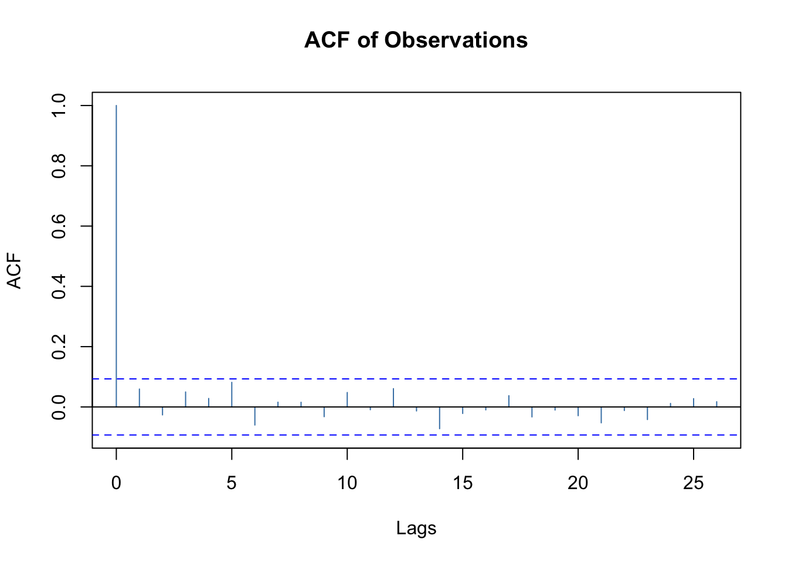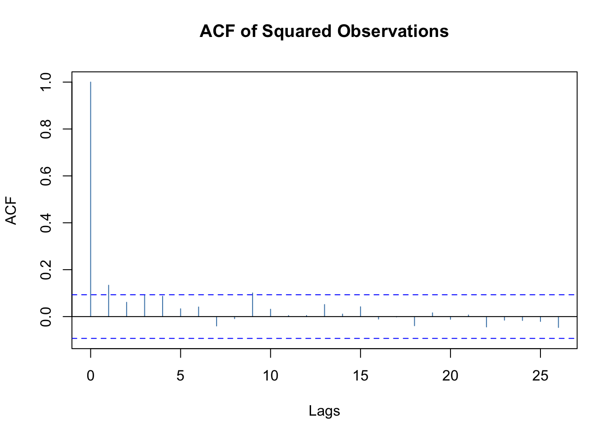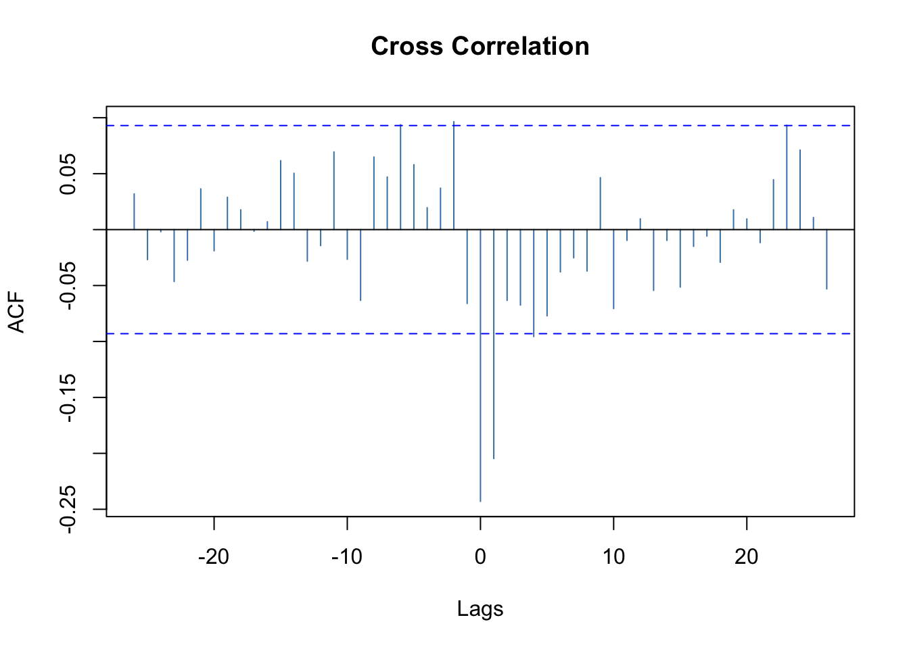


- –> モデル診断, 正規性を除き, データによく適合
garchM(sp5)
## Maximized log-likehood: -1289.449
##
## Coefficient(s):
## Estimate Std. Error t value Pr(>|t|)
## mu 0.3467741 0.3849340 0.90087 0.36765941
## gamma 0.0122469 0.0188799 0.64867 0.51655173
## omega 0.7612141 0.4796083 1.58716 0.11247694
## alpha 0.1163726 0.0317729 3.66264 0.00024963 ***
## beta 0.8581959 0.0308425 27.82511 < 2.22e-16 ***
## ---
## Signif. codes: 0 '***' 0.001 '**' 0.01 '*' 0.05 '.' 0.1 ' ' 1- –> リスクプレミアム (gamma), 有意でない (5%水準)
- –> GARCH(1,1)を選択せよ
8.4.4 Exponential GARCH Model
- Tsay 4.9, pp.218–220
Egarch(): Estimation of an EGARCH(1, 1) model. Assume normal innovations
- Egarch(rtn)# source("Egarch.R") # Compile R script
da <- read.table("m-ibmsp6709.txt", header = T) # Load data
dim(da) # Check sample size of the data
## [1] 516 3
ibm <- log(da$ibm + 1) # Take log transformation
Box.test(ibm, lag = 12, type = 'Ljung') # Check serial correlations
##
## Box-Ljung test
##
## data: ibm
## X-squared = 7.4042, df = 12, p-value = 0.8298
m1 <- Egarch(ibm) # Model fitting
##
## Estimation results of EGARCH(1,1) model:
## estimates: 0.006732418 -0.5983265 0.2176024 -0.4243194 0.9201499
## std.errors: 0.002877668 0.2349184 0.05916505 0.1683056 0.03886579
## t-ratio: 2.339539 -2.546954 3.677888 -2.521125 23.67506
names(m1)
## [1] "residuals" "volatility"- 上記出力の見方:
- Estimation results of EGARCH(1, 1) model:
- estimates: 0.006732389 -0.5983263 0.217603 -0.4243245 0.92015
- std.errors: 0.002877666 0.2349172 0.05916528 0.1683064 0.0388656
- t-ratio: 2.339531 -2.546967 3.677882 -2.521144 23.67518
- <– mu, omega, alpha1, gamma1, beta1の順に出力
- –> 値が教科書(p.220)と若干相違
- モデル診断
stresi <- m1$residuals/m1$volatility # Obtain standardized residuals
tdx <- c(1:516)/12 + 1967 # Compute time index
par(mfcol = c(2, 1)) # Plotting
plot(tdx, ibm, xlab = 'year', ylab = 'logrtn', type = 'l')
plot(tdx, stresi, xlab = 'year', ylab = 'stresi', type = 'l')
Box.test(stresi, lag = 10, type = 'Ljung') # Model checking
##
## Box-Ljung test
##
## data: stresi
## X-squared = 5.2866, df = 10, p-value = 0.8712
Box.test(stresi, lag = 20, type = 'Ljung')
##
## Box-Ljung test
##
## data: stresi
## X-squared = 20.983, df = 20, p-value = 0.3981
Box.test(stresi^2, lag = 10, type = 'Ljung')
##
## Box-Ljung test
##
## data: stresi^2
## X-squared = 5.0469, df = 10, p-value = 0.888
Box.test(stresi^2, lag = 20, type = 'Ljung')
##
## Box-Ljung test
##
## data: stresi^2
## X-squared = 14.261, df = 20, p-value = 0.817- –> Tsay, “The model fits the data reasonably well.”
8.4.5 Threshold GARCH モデル
- Tsay 4.10, pp.222–223
Tgarch(): Estimation of TGARCH(1, 1) model with Gaussian or Student-t innovations
- Tgarch11(x, cond.dist = "norm")da <- read.table("d-useu9910.txt", header = T) # daily USD/EUR, Jan/4/99--Aug/20/10
fx <- log(da$rate)
eu <- diff(fx) * 100
#
# source('Tgarch11.R')
m1 <- Tgarch11(eu)
## Log likelihood at MLEs:
## [1] -2731.832
##
## Coefficient(s):
## Estimate Std. Error t value Pr(>|t|)
## mu 0.012242608 0.010727558 1.14123 0.253774
## omega 0.001275116 0.000618444 2.06181 0.039226 *
## alpha 0.022346602 0.005249249 4.25710 2.0709e-05 ***
## gam1 0.012518109 0.007062079 1.77258 0.076298 .
## beta 0.968719987 0.004357842 222.29351 < 2.22e-16 ***
## ---
## Signif. codes: 0 '***' 0.001 '**' 0.01 '*' 0.05 '.' 0.1 ' ' 1- –> muは有意でない
- volatility方程式の係数は有意
- 特に, レバレッジ効果 (H0: gamma<=0, H1: gamma>0)は(片側) 5%で有意. t=1.772, p=0.038.
# モデル診断
names(m1)
## [1] "residuals" "volatility" "par"
at <- m1$residuals
sigt <- m1$volatility
resi <- at/sigt
Box.test(resi, lag = 10, type = 'Ljung')
##
## Box-Ljung test
##
## data: resi
## X-squared = 13.382, df = 10, p-value = 0.2031
Box.test(resi, lag = 20, type = 'Ljung')
##
## Box-Ljung test
##
## data: resi
## X-squared = 22.873, df = 20, p-value = 0.2951
Box.test(resi^2, lag = 10, type = 'Ljung')
##
## Box-Ljung test
##
## data: resi^2
## X-squared = 12.893, df = 10, p-value = 0.2297
Box.test(resi^2, lag = 20, type = 'Ljung')
##
## Box-Ljung test
##
## data: resi^2
## X-squared = 27.229, df = 20, p-value = 0.1289

- → 残差プロット, heavy tailの存在?
8.4.6 Asymmetric Power ARCH モデル
- Tsay 4.11, pp.224–225
m1 <- fGarch::garchFit(~ 1 + aparch(1, 1), data = eu, trace = F)
summary(m1)
##
## Title:
## GARCH Modelling
##
## Call:
## fGarch::garchFit(formula = ~1 + aparch(1, 1), data = eu, trace = F)
##
## Mean and Variance Equation:
## data ~ 1 + aparch(1, 1)
## <environment: 0x11491beb0>
## [data = eu]
##
## Conditional Distribution:
## norm
##
## Coefficient(s):
## mu omega alpha1 gamma1 beta1 delta
## 0.0127648 0.0015919 0.0313680 0.1135337 0.9689156 1.6743076
##
## Std. Errors:
## based on Hessian
##
## Error Analysis:
## Estimate Std. Error t value Pr(>|t|)
## mu 0.0127648 0.0107626 1.186 0.2356
## omega 0.0015919 0.0007226 2.203 0.0276 *
## alpha1 0.0313680 0.0053350 5.880 4.11e-09 ***
## gamma1 0.1135337 0.0711912 1.595 0.1108
## beta1 0.9689156 0.0038404 252.293 < 2e-16 ***
## delta 1.6743076 0.4057123 4.127 3.68e-05 ***
## ---
## Signif. codes: 0 '***' 0.001 '**' 0.01 '*' 0.05 '.' 0.1 ' ' 1
##
## Log Likelihood:
## -2731.172 normalized: -0.9324587
##
## Description:
## Tue Mar 19 13:24:01 2024 by user:
##
##
## Standardised Residuals Tests:
## Statistic p-Value
## Jarque-Bera Test R Chi^2 50.2052 1.253364e-11
## Shapiro-Wilk Test R W 0.9956711 1.608397e-07
## Ljung-Box Test R Q(10) 13.37689 0.2033562
## Ljung-Box Test R Q(15) 20.19634 0.1645295
## Ljung-Box Test R Q(20) 22.84736 0.2963516
## Ljung-Box Test R^2 Q(10) 13.15609 0.2150749
## Ljung-Box Test R^2 Q(15) 16.58007 0.3445807
## Ljung-Box Test R^2 Q(20) 27.44886 0.1231013
## LM Arch Test R TR^2 14.35737 0.2784718
##
## Information Criterion Statistics:
## AIC BIC SIC HQIC
## 1.869014 1.881269 1.869006 1.873428
m1
##
## Title:
## GARCH Modelling
##
## Call:
## fGarch::garchFit(formula = ~1 + aparch(1, 1), data = eu, trace = F)
##
## Mean and Variance Equation:
## data ~ 1 + aparch(1, 1)
## <environment: 0x11491beb0>
## [data = eu]
##
## Conditional Distribution:
## norm
##
## Coefficient(s):
## mu omega alpha1 gamma1 beta1 delta
## 0.0127648 0.0015919 0.0313680 0.1135337 0.9689156 1.6743076
##
## Std. Errors:
## based on Hessian
##
## Error Analysis:
## Estimate Std. Error t value Pr(>|t|)
## mu 0.0127648 0.0107626 1.186 0.2356
## omega 0.0015919 0.0007226 2.203 0.0276 *
## alpha1 0.0313680 0.0053350 5.880 4.11e-09 ***
## gamma1 0.1135337 0.0711912 1.595 0.1108
## beta1 0.9689156 0.0038404 252.293 < 2e-16 ***
## delta 1.6743076 0.4057123 4.127 3.68e-05 ***
## ---
## Signif. codes: 0 '***' 0.001 '**' 0.01 '*' 0.05 '.' 0.1 ' ' 1
##
## Log Likelihood:
## -2731.172 normalized: -0.9324587
##
## Description:
## Tue Mar 19 13:24:01 2024 by user:| Estimate | Std. Error | t value | Pr(>|t|) | |
|---|---|---|---|---|
| mu | 0.0127648 | 0.0107626 | 1.186042 | 0.2356059 |
| omega | 0.0015919 | 0.0007226 | 2.203001 | 0.0275947 |
| alpha1 | 0.0313680 | 0.0053350 | 5.879685 | 0.0000000 |
| gamma1 | 0.1135337 | 0.0711912 | 1.594772 | 0.1107632 |
| beta1 | 0.9689156 | 0.0038404 | 252.292918 | 0.0000000 |
| delta | 1.6743076 | 0.4057123 | 4.126835 | 0.0000368 |
- –> モデル診断, データに良く適合.
- delta = 1.67の解釈難.
- –> delta = 2とは、有意に乖離していない(標準誤差0.406)
- –> delta = 2 (TGARCH(1, 1))でも良い?
m2 <- fGarch::garchFit(~ 1 + aparch(1, 1), data = eu, delta = 2, include.delta = F, trace = F)
summary(m2)
##
## Title:
## GARCH Modelling
##
## Call:
## fGarch::garchFit(formula = ~1 + aparch(1, 1), data = eu, delta = 2,
## include.delta = F, trace = F)
##
## Mean and Variance Equation:
## data ~ 1 + aparch(1, 1)
## <environment: 0x113335568>
## [data = eu]
##
## Conditional Distribution:
## norm
##
## Coefficient(s):
## mu omega alpha1 gamma1 beta1
## 0.0122646 0.0012745 0.0282723 0.1100239 0.9687115
##
## Std. Errors:
## based on Hessian
##
## Error Analysis:
## Estimate Std. Error t value Pr(>|t|)
## mu 0.0122646 0.0107289 1.143 0.2530
## omega 0.0012745 0.0005752 2.216 0.0267 *
## alpha1 0.0282723 0.0038637 7.317 2.53e-13 ***
## gamma1 0.1100239 0.0649051 1.695 0.0900 .
## beta1 0.9687115 0.0039421 245.735 < 2e-16 ***
## ---
## Signif. codes: 0 '***' 0.001 '**' 0.01 '*' 0.05 '.' 0.1 ' ' 1
##
## Log Likelihood:
## -2731.85 normalized: -0.9326902
##
## Description:
## Tue Mar 19 13:24:01 2024 by user:
##
##
## Standardised Residuals Tests:
## Statistic p-Value
## Jarque-Bera Test R Chi^2 49.97678 1.405009e-11
## Shapiro-Wilk Test R W 0.9956803 1.655878e-07
## Ljung-Box Test R Q(10) 13.38285 0.203047
## Ljung-Box Test R Q(15) 20.29833 0.1607845
## Ljung-Box Test R Q(20) 22.87265 0.2950909
## Ljung-Box Test R^2 Q(10) 12.89586 0.229553
## Ljung-Box Test R^2 Q(15) 16.55288 0.3462875
## Ljung-Box Test R^2 Q(20) 27.24037 0.1286359
## LM Arch Test R TR^2 14.29662 0.2821694
##
## Information Criterion Statistics:
## AIC BIC SIC HQIC
## 1.868795 1.879007 1.868789 1.872472
plot(m2, which = 1:13)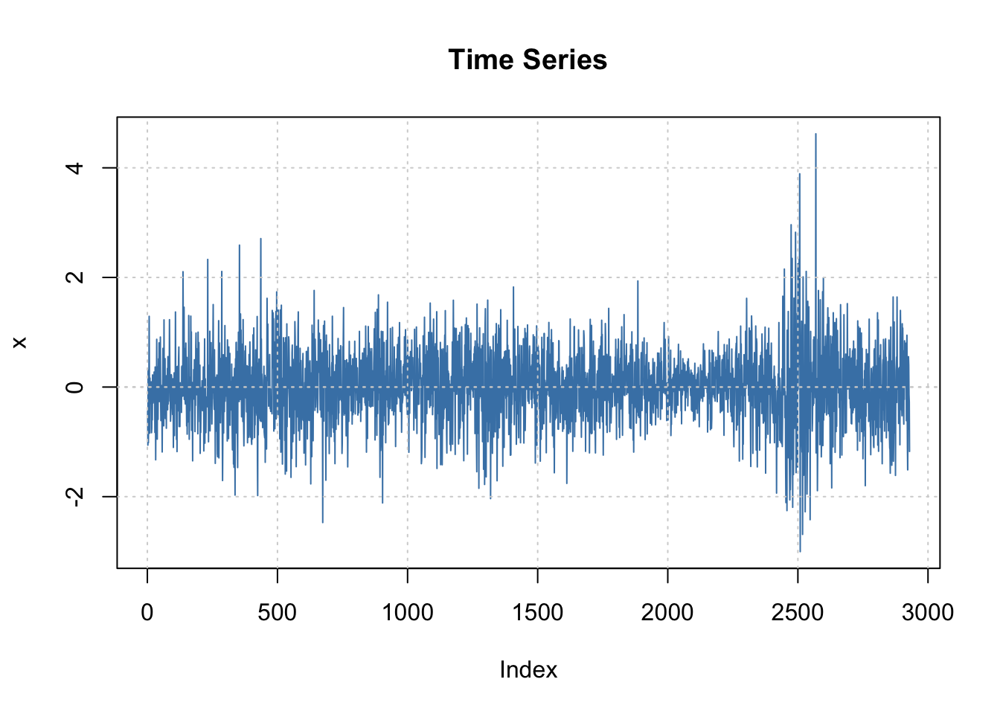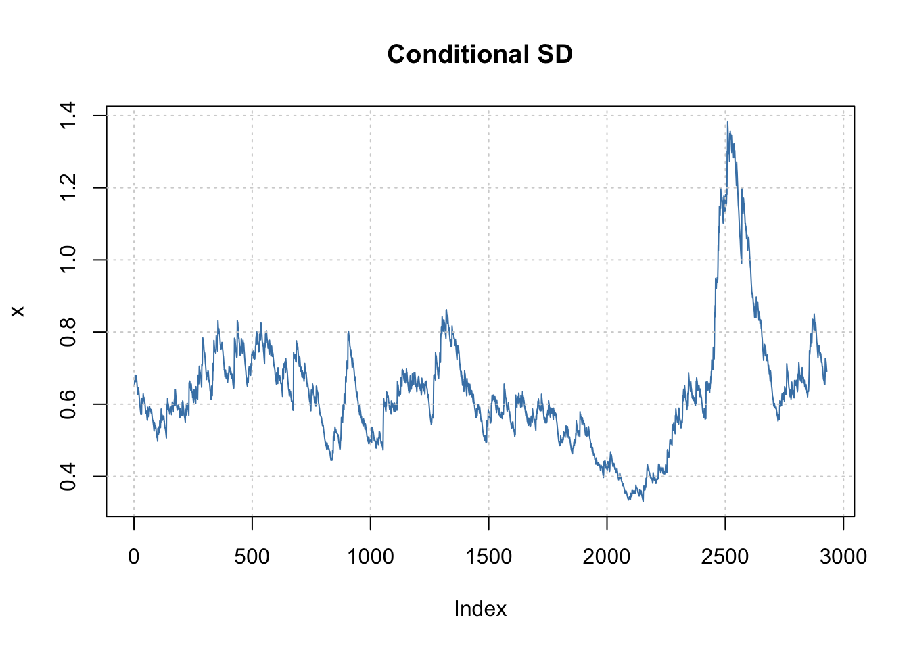 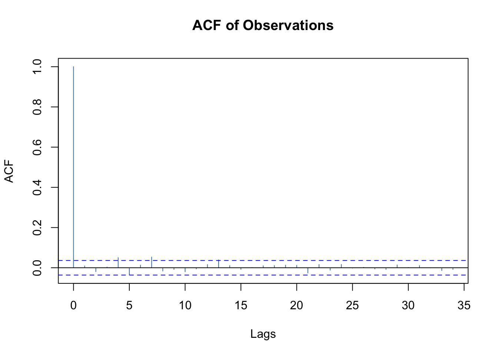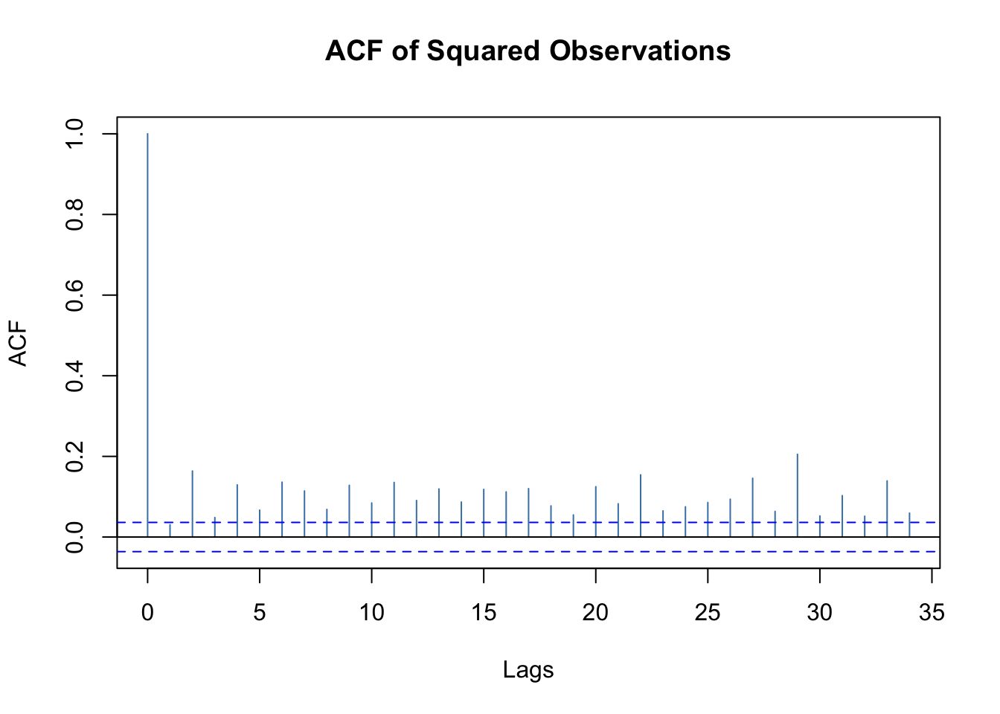
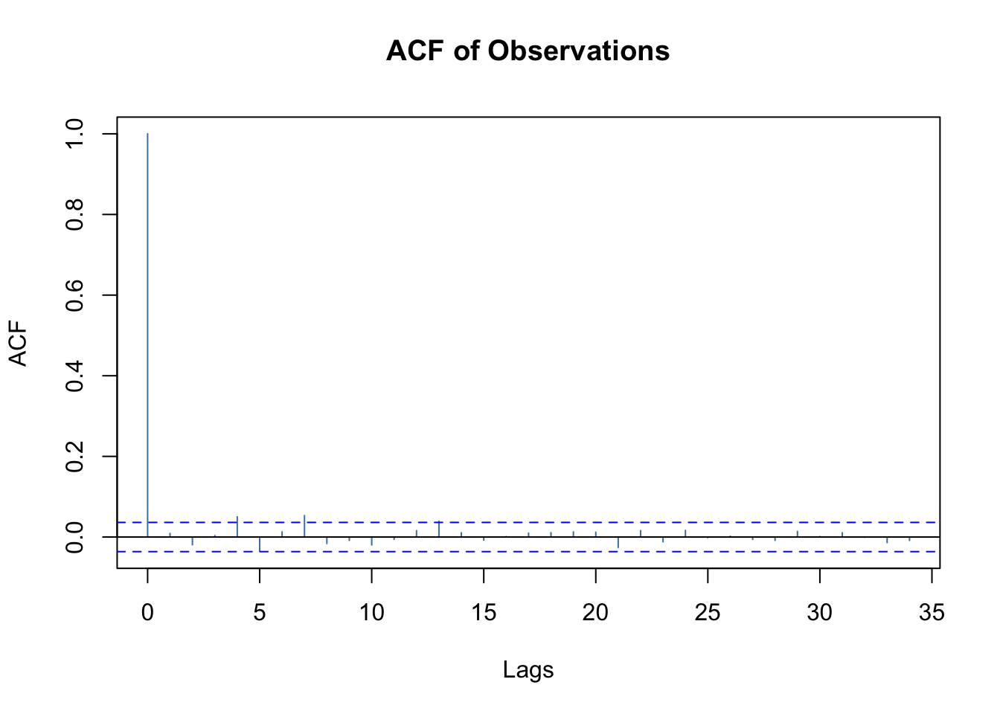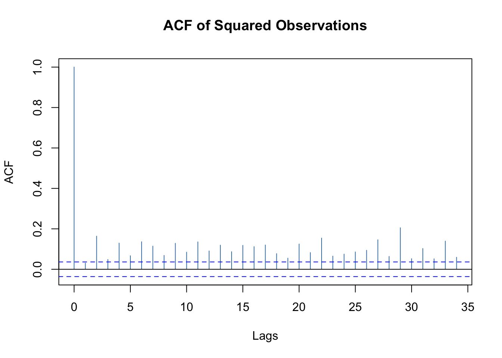

 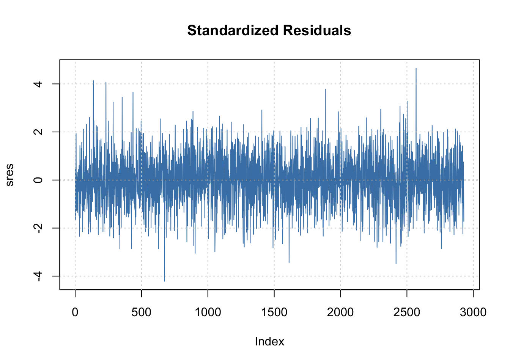
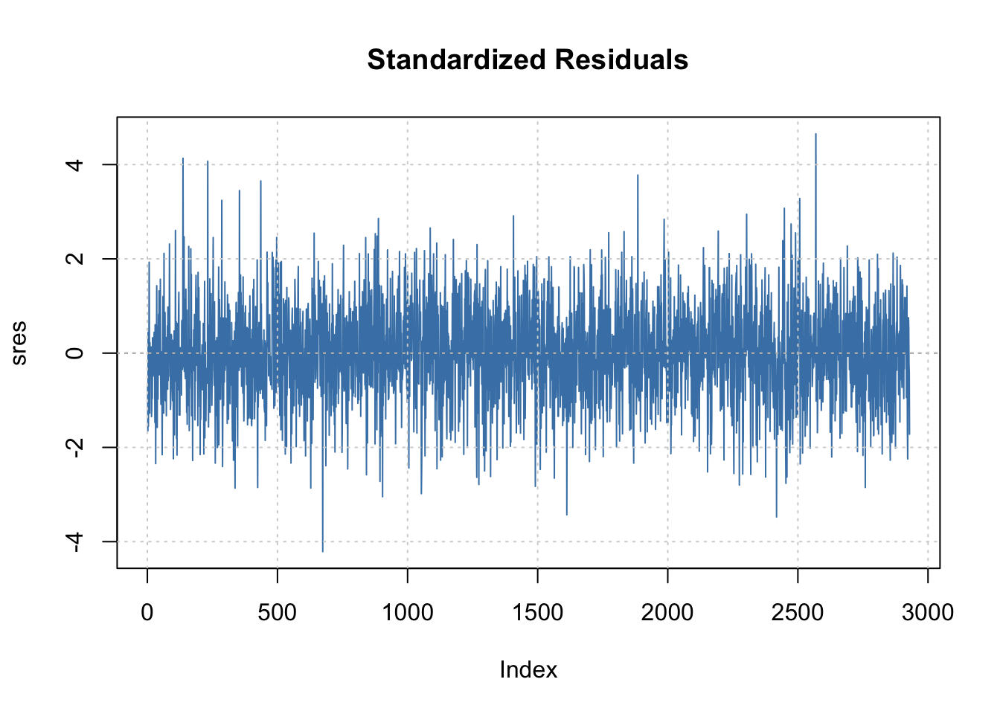 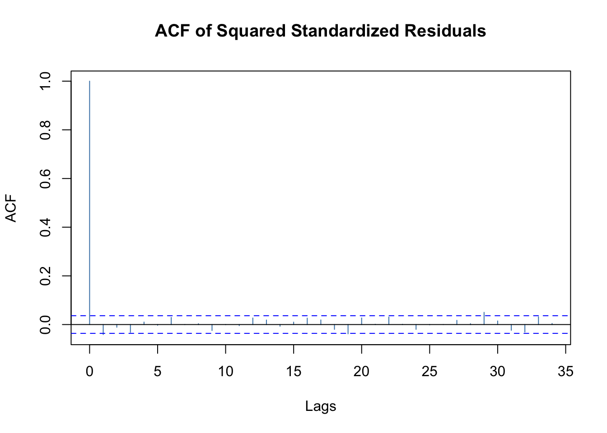
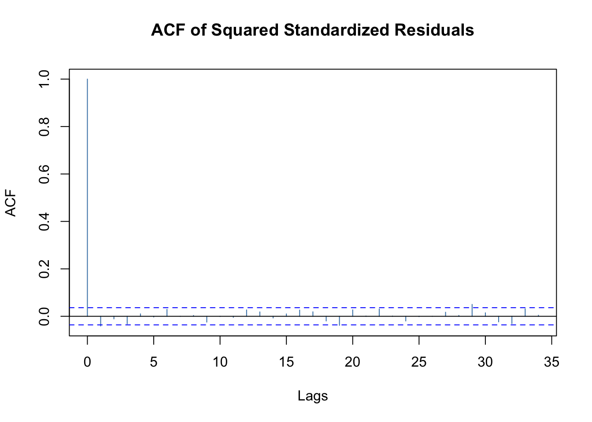 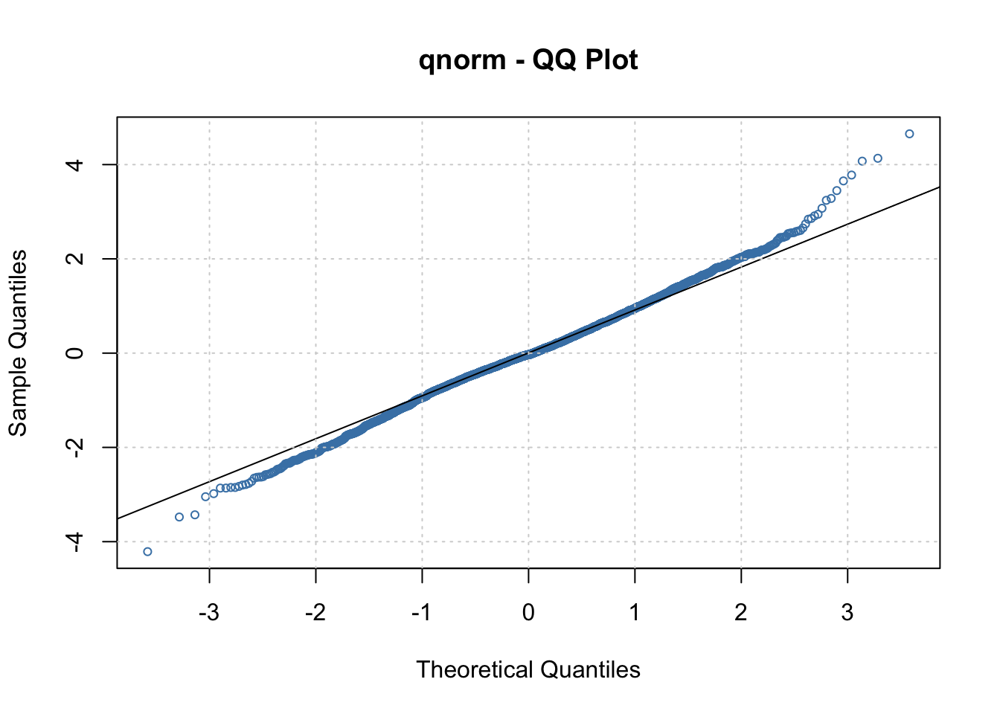
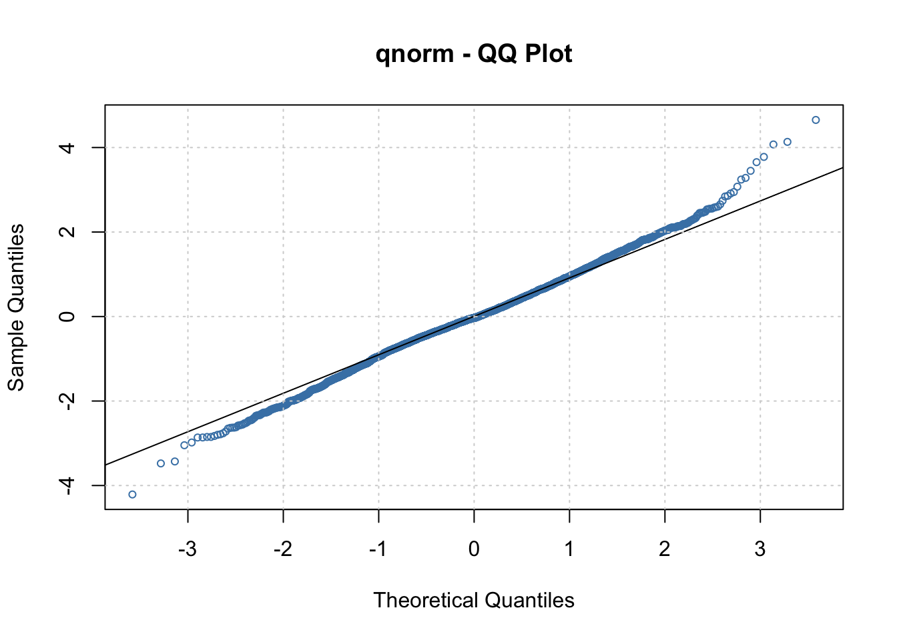
m2
##
## Title:
## GARCH Modelling
##
## Call:
## fGarch::garchFit(formula = ~1 + aparch(1, 1), data = eu, delta = 2,
## include.delta = F, trace = F)
##
## Mean and Variance Equation:
## data ~ 1 + aparch(1, 1)
## <environment: 0x113335568>
## [data = eu]
##
## Conditional Distribution:
## norm
##
## Coefficient(s):
## mu omega alpha1 gamma1 beta1
## 0.0122646 0.0012745 0.0282723 0.1100239 0.9687115
##
## Std. Errors:
## based on Hessian
##
## Error Analysis:
## Estimate Std. Error t value Pr(>|t|)
## mu 0.0122646 0.0107289 1.143 0.2530
## omega 0.0012745 0.0005752 2.216 0.0267 *
## alpha1 0.0282723 0.0038637 7.317 2.53e-13 ***
## gamma1 0.1100239 0.0649051 1.695 0.0900 .
## beta1 0.9687115 0.0039421 245.735 < 2e-16 ***
## ---
## Signif. codes: 0 '***' 0.001 '**' 0.01 '*' 0.05 '.' 0.1 ' ' 1
##
## Log Likelihood:
## -2731.85 normalized: -0.9326902
##
## Description:
## Tue Mar 19 13:24:01 2024 by user:| Estimate | Std. Error | t value | Pr(>|t|) | |
|---|---|---|---|---|
| mu | 0.0122646 | 0.0107289 | 1.143134 | 0.2529831 |
| omega | 0.0012745 | 0.0005752 | 2.215693 | 0.0267125 |
| alpha1 | 0.0282723 | 0.0038637 | 7.317487 | 0.0000000 |
| gamma1 | 0.1100239 | 0.0649051 | 1.695150 | 0.0900469 |
| beta1 | 0.9687115 | 0.0039421 | 245.735369 | 0.0000000 |
- –> m1と結果類似
8.4.7 Nonsymmetric GARCH モデル
- Tsay 4.12, pp.227–228
Ngarch(): Estimation of a non-symmertic GARCH, NGARCH(1, 1), model.
- Assume normal innovations
- Ngarch(rtn)da <- read.table("d-useu9910.txt", header = T)
fx <- log(da$rate)
eu <- diff(fx) * 100
#
source("Ngarch.R")
m1 <- Ngarch(eu)
##
## Estimation results of NGARCH(1,1) model:
## estimates: -0.001094043 0.002366721 0.9618047 0.02118565 0.7309616
## std.errors: 0.01080893 0.000580552 0.006045803 0.003604727 0.2501548
## t-ratio: -0.1012166 4.076674 159.0863 5.877186 2.922037
res <- m1$residuals
vol <- m1$volatility
resi <- res / vol
Box.test(resi, lag = 10, type = 'Ljung')
##
## Box-Ljung test
##
## data: resi
## X-squared = 14.776, df = 10, p-value = 0.1404
Box.test(resi^2, lag = 10, type = 'Ljung')
##
## Box-Ljung test
##
## data: resi^2
## X-squared = 12.943, df = 10, p-value = 0.2269
# Estimation results of NGARCH(1, 1) model:
# estimates: -0.001094043 0.002366721 0.9618047 0.02118565 0.7309616
#std.errors: 0.01080893 0.000580552 0.006045803 0.003604727 0.2501548
# t-ratio: -0.1012166 4.076674 159.0863 5.877186 2.922037
# <-- mu, beta0, beta1, beta2, thetaの順- –> muを除いて(5%)有意
- 特に, レバレッジ効果(theta), t=2.92で(5%)有意
- –> 上記TGARCH(1, 1)の結果と同様
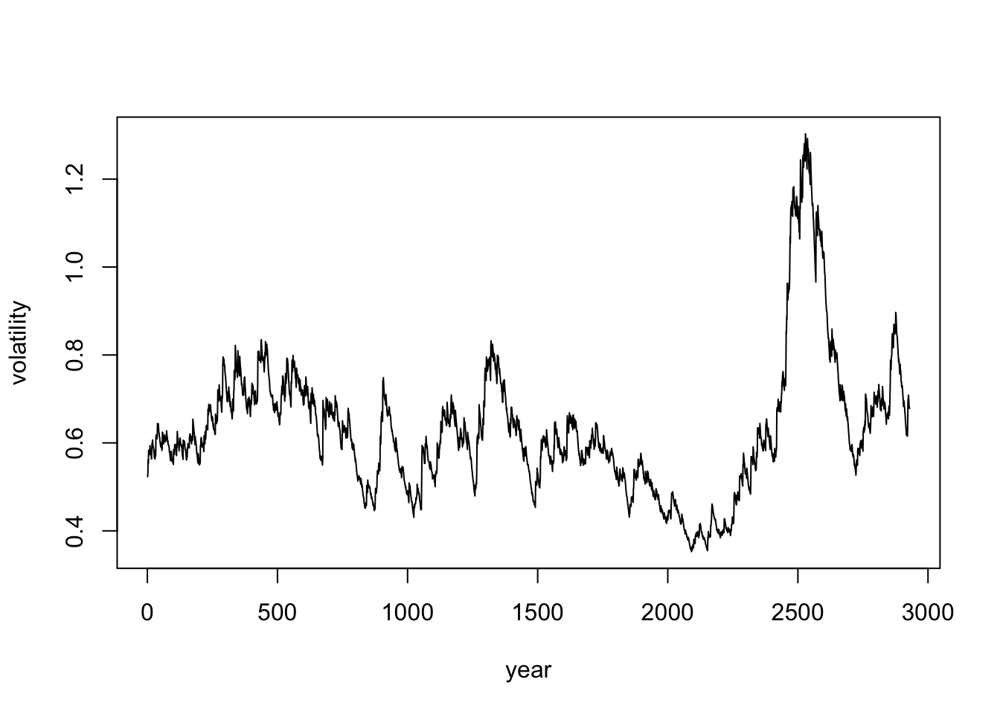

- → 両モデルは, 類似のvolatility推定値
8.4.8 代替的アプリーチ間の比較
- Tsay 4.15.1, pp.234–235
(日次データから)月次ボラティリティの推定
- “ルートT・ルール”の適用
- 方法1: 日次対数リターン使用 (white noiseを仮定)
# source("vold2m.R") ## Compile the script
m1 <- vold2m(x)
names(m1)
## [1] "volatility" "ndays"
v1 <- m1$volatility
cnt <- m1$ndays
cnt[1:5]
## [1] 20 20 21 21 21- 方法2: 日次対数リターン使用 (MA過程を仮定)
月次データの使用
- 方法3: GARCH(1,1)を月次対数リターンに適用
# library(fGarch)
m3 <- fGarch::garchFit(~ 1 + garch(1, 1), data = sp5, trace = F)
summary(m3)
##
## Title:
## GARCH Modelling
##
## Call:
## fGarch::garchFit(formula = ~1 + garch(1, 1), data = sp5, trace = F)
##
## Mean and Variance Equation:
## data ~ 1 + garch(1, 1)
## <environment: 0x10f231120>
## [data = sp5]
##
## Conditional Distribution:
## norm
##
## Coefficient(s):
## mu omega alpha1 beta1
## 5.3471e-03 9.3263e-05 1.1422e-01 8.4864e-01
##
## Std. Errors:
## based on Hessian
##
## Error Analysis:
## Estimate Std. Error t value Pr(>|t|)
## mu 5.347e-03 1.742e-03 3.069 0.002149 **
## omega 9.326e-05 4.859e-05 1.919 0.054942 .
## alpha1 1.142e-01 3.003e-02 3.804 0.000142 ***
## beta1 8.486e-01 3.186e-02 26.634 < 2e-16 ***
## ---
## Signif. codes: 0 '***' 0.001 '**' 0.01 '*' 0.05 '.' 0.1 ' ' 1
##
## Log Likelihood:
## 899.7817 normalized: 1.717141
##
## Description:
## Tue Mar 19 13:24:19 2024 by user:
##
##
## Standardised Residuals Tests:
## Statistic p-Value
## Jarque-Bera Test R Chi^2 172.5211 0
## Shapiro-Wilk Test R W 0.9690782 4.639274e-09
## Ljung-Box Test R Q(10) 11.17329 0.3441774
## Ljung-Box Test R Q(15) 15.451 0.4194449
## Ljung-Box Test R Q(20) 17.56469 0.61606
## Ljung-Box Test R^2 Q(10) 5.466795 0.8578981
## Ljung-Box Test R^2 Q(15) 7.031543 0.9567685
## Ljung-Box Test R^2 Q(20) 8.200425 0.9904566
## LM Arch Test R TR^2 5.62988 0.9335791
##
## Information Criterion Statistics:
## AIC BIC SIC HQIC
## -3.419014 -3.386484 -3.419129 -3.406275
v3 <- volatility(m3)
v3 <- v3[158:524]| Estimate | Std. Error | t value | Pr(>|t|) | |
|---|---|---|---|---|
| mu | 0.0053471 | 0.0017424 | 3.068779 | 0.0021494 |
| omega | 0.0000933 | 0.0000486 | 1.919333 | 0.0549423 |
| alpha1 | 0.1142231 | 0.0300281 | 3.803878 | 0.0001424 |
| beta1 | 0.8486414 | 0.0318635 | 26.633652 | 0.0000000 |
- 3つの方法の比較
v1 <- ts(v1, frequency = 12, start = c(1980, 1))
v2 <- ts(v2, frequency = 12, start = c(1980, 1))
v3 <- ts(v3, frequency = 12, start = c(1980, 1))
max(v1, v2, v3)
## [1] 0.2870294
#
# par(mfcol=c(3,1))
# plot(v1, xlab='year', ylab='vol', type='l', ylim=c(0,.3))
# title(main='(a) No correlations')
# plot(v2, xlab='year', ylab='vol', type='l', ylim=c(0,.3))
# title(main='(b) Lag-1 correlation')
# plot(v3, xlab='year', ylab='vol', type='l', ylim=c(0,.3))
# title(main='(c) GARCH(1,1)')
plot(ts.intersect(v1, v2, v3))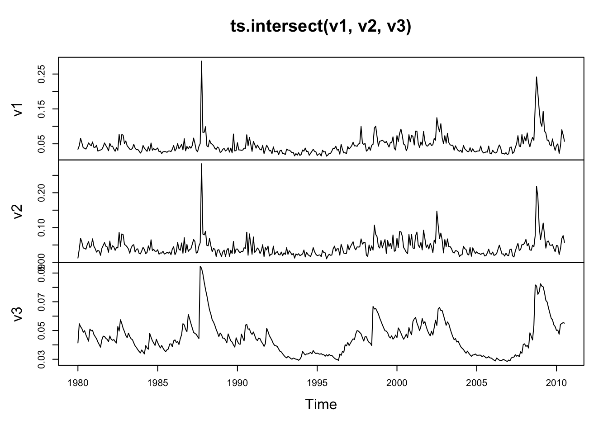